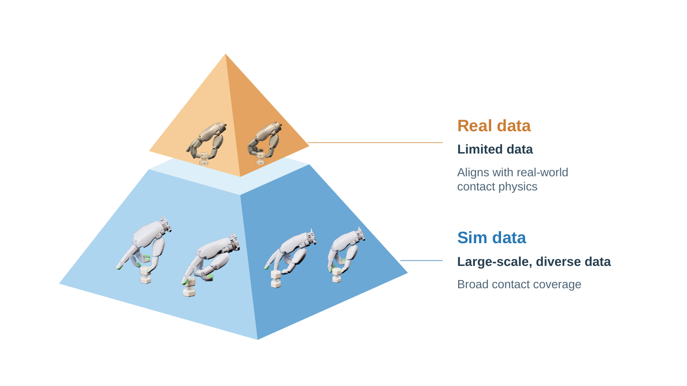

Visual geometry
Scene points describe the part, target interface, and surrounding workspace.
Dexterous robotic assembly
GeoVAST unifies global visual geometry and fingertip contact evidence for closed-loop multi-finger manipulation.

Approach
Vision provides broad scene context. Tactile observations resolve local contact, alignment, resistance, and slip when vision alone is ambiguous.
Scene points describe the part, target interface, and surrounding workspace.
Fingertip observations capture localized interaction and deformation.
The policy updates its motion as geometry and contact evidence change.
Assembly tasks
Initial demonstrations and benchmark details will be released with the paper.
Alignment under partial occlusion.
Contact-guided engagement.
Fine rotational coordination.
Constrained multi-stage motion.
Resources